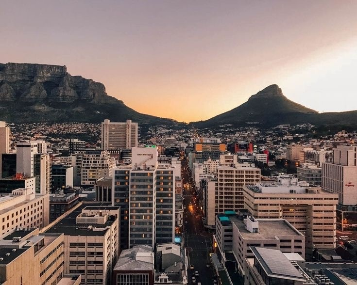

City of Cape Town
Author: Tshembani Mathebula
Published: 27 March 2024

The Cape of Good Hope
Cape Town is widely recognized as one of the best cities in the world, and it has received numerous accolades for its natural beauty, vibrant culture, and high quality of life. Its landscape is truly breathtaking, with the city nestled between the majestic Table Mountain and the sparkling Atlantic Ocean. Being located on the coast, Cape Town boasts several beautiful harbors, including the iconic Victoria & Alfred Waterfront. These harbors not only provide a picturesque backdrop but also serve as bustling centers for entertainment, shopping, and dining. Cape Town is renowned for its stunning beaches, attracting both locals and tourists alike. From the trendy Camps Bay and Clifton beaches to the scenic Boulders Beach, where visitors can even spot penguins, there is a beach for everyone to enjoy. In terms of education, Cape Town is home to the University of Cape Town, which is consistently ranked as the top university in Africa. It offers a wide range of academic programs and attracts students from all over the world. One of the most recognizable landmarks of Cape Town is Table Mountain. This flat-topped mountain offers breathtaking views of the city and is a popular destination for hiking and sightseeing. Visitors can reach the summit by taking a cable car or opt for a more adventurous hike. Cape Town is a major tourist destination, attracting millions of visitors each year. They come to experience the city's rich history, diverse culture, and vibrant nightlife. The city is also known for its wine regions, such as Stellenbosch and Franschhoek, where visitors can indulge in wine tastings and tours. Cape Town is made up of various suburbs, each with its own unique character and charm. From affluent neighborhoods like Constantia and Bishopscourt to trendy areas like Woodstock and Observatory, there is a suburb to suit every lifestyle. Overall, Cape Town offers a combination of natural beauty, cultural richness, and a high standard of living, making it a top-rated city and a must-visit destination for travelers from around the globe.
Landscape And Buildings
Cape Town, located on the southwestern coast of South Africa, is known for its stunning and diverse landscape. The city is nestled between the majestic Table Mountain and the sparkling waters of the Atlantic Ocean. Table mountain iconic flat-topped mountain dominates the city's skyline and offers breathtaking panoramic views of Cape Town and its surroundings. It is a UNESCO World Heritage Site and a popular destination for hikers and nature lovers. Then there is Cape Peninsula: Stretching southwards from Cape Town, the Cape Peninsula is a narrow strip of land that encompasses scenic coastal cliffs, picturesque beaches, and charming seaside towns. Cape Point, located at the southernmost tip of the peninsula, is a dramatic headland where the Atlantic and Indian Oceans meet. Robben Island situated just off the coast of Cape Town, Robben Island holds historical significance as a former prison where political prisoners, including Nelson Mandela, were held during the apartheid era. It has now become a symbol of triumph over adversity and offers guided tours that shed light on South Africa's struggle for freedom.
Victoria & Alfred Waterfront: This bustling waterfront area is a vibrant hub of entertainment, shopping, dining, and leisure activities. It offers stunning views of the harbor, with a backdrop of Table Mountain. Visitors can enjoy boat rides, visit museums, browse through markets, or simply soak in the lively atmosphere. Bo-Kaap: Known for its colorful houses and cobblestone streets, Bo-Kaap is a vibrant neighborhood that reflects Cape Malay culture and heritage. It is a picturesque area with a rich history and is a popular spot for photographers and tourists seeking a unique cultural experience. Kirstenbosch National Botanical Garden: Situated at the foot of Table Mountain, Kirstenbosch is a breathtaking botanical garden that showcases the diverse flora of South Africa. It offers tranquil walking trails, serene picnic spots, and regular concerts and events amidst the stunning backdrop of the mountain. Cape Town City Hall: Located in the city center, the Cape Town City Hall is a grand building that showcases impressive architecture and serves as a symbol of the city's history. It is a landmark that has witnessed significant moments in South Africa's journey towards democracy. Overall, Cape Town's landscape is a harmonious blend of nature, culture, and history. Its towering mountains, pristine beaches, vibrant neighborhoods, and historical landmarks create a captivating and unforgettable experience for visitors from around the world.
Games
In Cape Town, there are plenty of land-based activities to enjoy. Here are some of the popular ones: 1. Hiking: Cape Town is famous for its stunning natural landscapes, and hiking is a great way to explore them. Whether it's hiking up Table Mountain, Lion's Head, or one of the many other scenic trails, you'll be rewarded with breathtaking views of the city and coastline. 2. Cycling: Cape Town offers a variety of cycling routes, both on-road and off-road. You can rent a bicycle and ride along the scenic coastal roads, explore the city's neighborhoods, or venture into the nearby wine regions for a leisurely bike tour. 3. Quad Biking: As mentioned earlier, quad biking is a thrilling adventure that allows you to explore the rugged terrains around Cape Town. Hop on an ATV and navigate through sandy dunes, rocky slopes, and forest trails for an adrenaline-fueled experience. 4. Beach Activities: Cape Town is blessed with beautiful beaches, and there are plenty of activities to enjoy by the sea. You can play beach volleyball, try your hand at surfing or stand-up paddleboarding, or simply relax and soak up the sun.
5. Segway Tours: Discover Cape Town's landmarks and attractions on a Segway tour. These two-wheeled, self-balancing vehicles are a fun and unique way to explore the city's highlights, including the V&A Waterfront and the Green Point Urban Park. 6. Go-Karting: If you're a fan of speed and competition, head to one of Cape Town's go-karting tracks. Race against your friends or family and experience the thrill of driving a go-kart around a professionally designed track. 7. Escape Rooms: Test your problem-solving skills and teamwork by taking part in an escape room challenge. These interactive games require you to solve puzzles and unravel mysteries within a set time limit. It's a great activity for groups and a fun way to challenge yourself. These are just a few examples of the land-based activities you can enjoy in Cape Town. The city offers a wide range of options to suit different interests and preferences, ensuring that there is something for everyone to enjoy.
Certainly! Cape Town's landscape is breathtakingly diverse. The iconic Table Mountain stands tall, offering panoramic views of the city and surrounding areas. The city is also surrounded by stunning natural beauty, including the picturesque Cape Peninsula, with its rugged coastline and charming coastal towns like Simon's Town and Hout Bay. When it comes to fun and entertainment, Cape Town has something for everyone. The city boasts a vibrant nightlife scene, with a wide range of bars, clubs, and live music venues to choose from. The bustling Victoria & Alfred Waterfront is a popular destination for shopping, dining, and entertainment, offering a variety of restaurants, shops, and attractions. For outdoor enthusiasts, Cape Town offers an array of activities. You can hike up Table Mountain or explore the many nature reserves and hiking trails in the area. The city is also known for its world-class surfing spots, kiteboarding, and other water sports. Additionally, Cape Town is home to a rich cultural heritage, with a thriving arts and music scene. The city hosts numerous festivals and events throughout the year, showcasing local talent and international acts. In conclusion, Cape Town is a destination that combines stunning natural beauty, vibrant entertainment options, and a rich cultural experience. Whether you're seeking adventure, relaxation, or simply a good time, Cape Town has it all. Thank you for joining us on this journey through Cape Town's landscape, fun, and entertainment.